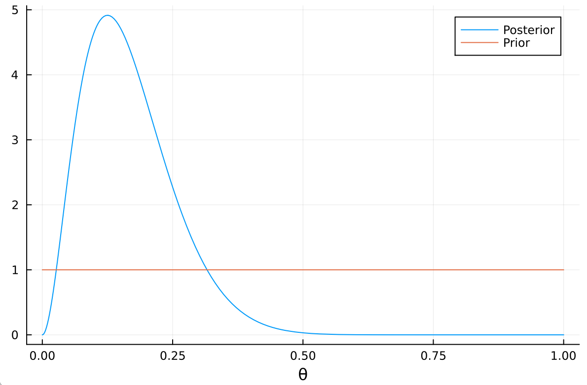
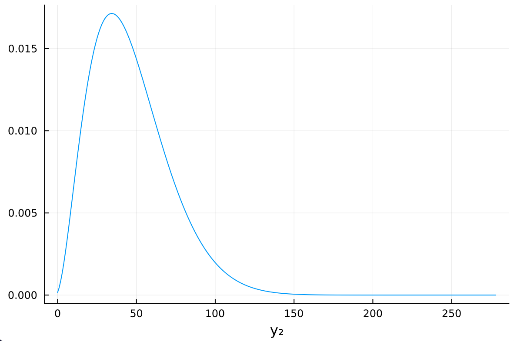
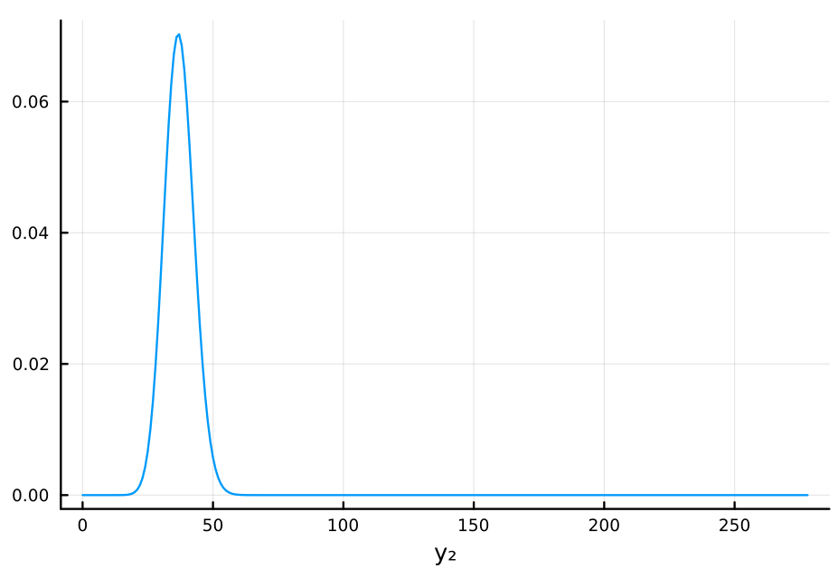

Exercise 3.7 Solution Example - Hoff, A First Course in Bayesian Statistical Methods
標準ベイズ統計学 演習問題 3.7 解答例
Table of Contents
Answer
a)
事前分布は一様分布 Beta(1, 1)より、事後分布は Beta(3, 14)となる。 (The prior distribution is a uniform distribution Beta(1, 1), so the posterior distribution is Beta(3, 14).)
using Distributions
begin
a, b = 1 , 1 # prior parameters
n₁, y₁ = 15, 2 # data
mean = (a + y₁)/ (a + b + n₁) # posterior mean
"Posterior mean : $mean"
end
Posterior mean : 0.17647058823529413
mode = (a + y₁ - 1) / (a + b + n₁ - 2) # posterior mode
"Posterior mode : $mode"
Posterior mode : 0.13333333333333333
var = mean * (1 - mean) / (a + b + n₁ + 1) # posterior variance
std = sqrt(var) # posterior standard deviation
"Posterior standard deviation : $std"
Posterior standard deviation : 0.08985442539129099

b)
answer: b) i.
Proof:
\begin{align*} \text{Pr}\left( Y_2 = y_2 \mid Y_1 = 2 \right) &= \int_0^1 \text{Pr}\left( Y_2 = y_2, \theta \mid Y_1 = 2 \right) d \theta \\ &= \int_0^1 \text{Pr}\left( Y_2 = y_2 \mid \theta , Y_1 = 2 \right) \text{Pr}\left( \theta \mid Y_1 = 2 \right) d \theta \\ \end{align*}より、等式が成り立つための条件は、 (The condition for the equality to hold is)
\begin{align*} & \text{Pr}\left( Y_2 = y_2, \mid \theta, Y_1 = 2 \right) = \text{Pr}\left( Y_2 = y_2 \mid \theta \right) \\ \Leftrightarrow \quad &\text{Pr}\left(Y_1 = 2 \mid \theta \right) \text{Pr}\left(Y_2 = y_2 \mid \theta , Y_1 = 2\right) = \text{Pr}\left(Y_1 = 2 \mid \theta \right) \text{Pr}\left(Y_2 = y_2 \mid \theta \right) \\ \Leftrightarrow \quad &\text{Pr}\left(Y_1 = 2 , Y_2 = y_2 \mid \theta \right) = \text{Pr}\left(Y_1 = 2 \mid \theta \right) \text{Pr}\left(Y_2 = y_2 \mid \theta \right) \end{align*}これを\((Y_1, Y_2)\)の同時分布について一般化すると、(\eqref{orgc5c3b84})が導かれる。 (This can be generalized to the joint distribution of \((Y_1, Y_2)\).)
answer: b) ii.
answer: b) iii.
より、
\begin{align*} \text{Pr}\left( Y_2 = y_2 \mid Y_1 = 2 \right) &= \frac{\Gamma(3 + 14)}{\Gamma(3) \Gamma(14)} \begin{pmatrix} 278 \\ y_2 \end{pmatrix} \frac{\Gamma(y_2 + 3) \Gamma(292 - y_2)}{\Gamma(295)} \\ \end{align*}c)
answer
b)iiiの答えに\(y_2 = 0, 1, \dots\) を代入することもできるが、
\begin{align*} \text{Pr}\left( Y_2 = y_2 \mid Y_1 = 2 \right) &= \frac{\Gamma(3 + 14)}{\Gamma(3) \Gamma(14)} \begin{pmatrix} 278 \\ y_2 \end{pmatrix} \frac{\Gamma(y_2 + 3) \Gamma(292 - y_2)}{\Gamma(295)} \\ &= \begin{pmatrix} 278 \\ y_2 \end{pmatrix} \frac{B(y_2 + 3, 292 - y_2)}{B(3, 14)} \\ &= \begin{pmatrix} 278 \\ y_2 \end{pmatrix} \frac{B(y_2 + 3, 278 - y_2 + 14)}{B(3, 14)} \\ &= \text{dbetabinomial}(y_2, 278, 3, 14) \end{align*}より、 \(y_2\)はベータ二項分布に従うことがわかる。 これを利用してプロットすると、以下のようになる。 (Using this, we can plot the distribution as follows.)
n₂ = 278
plot(BetaBinomial(n₂, a + y₁, a + b + n₁ - y₁), 0:278, label=nothing)
xlabel!("y₂")

d)
answer:
θ̂ = 2 // 15
plot(Binomial(n₂, θ̂), 0:278, label=nothing, xlabel="y₂")

mean2 = n₂ * θ̂
var2 = n₂ * θ̂ * (1 - θ̂)
std2 = sqrt(var2)
"mean: $mean2, std: $std2"
mean: 37.06666666666666, std: 5.667843015155276
c) との比較:
mode は c) が 34, で上の分布が 37 と、かなり近いが、cの分布の方がかなり裾の広い分布（分散が大きい分布）となっていることがわかる。 これは、1回目のデータが得られたあとの\(\theta\)の事後分布の不確実性が c)の分布に反映されているためである。 逆に、上の分布には 1 回目のデータのサンプルサイズ（データの妥当性）が反映されていないため、予測には c の分布を使うのがよいと考えられる。
(Comparison with c): The mode of c) is 34, while the mode of the above distribution is 37, which are quite close. However, it can be seen that the distribution of c) has a much wider tail (larger variance). This is because the uncertainty of \(\theta\) after obtaining the first data is reflected in the distribution of c).